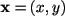

| KERNEL METHOD |
| - Web Application |
| - Optimization Method |
| - Original paper |
| - FAQ |
| - Matlab Code |
| - Presentation |
| Links |
| - Histogram Optimization |
| - soon Spike Correlation |
| - HOME Page |
| Tweet by author |
 This page is managed by H. Shimazaki, PhD |
| Kernel Bandwidth Optimization Histogram Optimization | Kernel Optimization | Spike Correlation | Last Update 2011-09-28 19:38 |
| KERNEL METHOD |
| - Web Application |
| - Optimization Method |
| - Original paper |
| - FAQ |
| - Matlab Code |
| - Presentation |
| Links |
| - Histogram Optimization |
| - soon Spike Correlation |
| - HOME Page |
| Tweet by author |
This page is managed by H. Shimazaki, PhD |
This page INSTANTLY generates an optimized Kernel Density Estimate of YOUR DATA. |
Web Application for Kernel Bandwidth Optimization (Ver. 0.4)
2. 3. * The Gauss kernel density was used. Its standard deviation is optmized. * Feel safe. The data is processed on your own computer (NEVER transferred to our server). * This web application uses the HTML5 Canvas technology. ver 0.4 (101231) accelarating computation by excluding >5 std samples. Web Application for Kernel Bandwidth Optimization © 2009-2011Hideaki Shimazaki |
|
From the observed data only, the method estimates a binwidth that minimizes expected L2 loss between the kernel density estimate and an unknown underlying density function. An assumption made here is merely that samples are drawn from the density independently each other. The method was developed in collaboration with Prof. Shinomoto in Kyoto University.
|
Q. Is the method applicable to probability density estimation? A. Yes. Q. You provide a histogram optimization method, too. Which of the methods, kernel and histogram, do you recommend for density estimation. A. Kernel density estimation is generally recommended. See our original paper for comparison of the methods. Q. Is it different from the least squares cross-validation method? A. Yes. The above formula was derrived under a Poisson point process assumption [see our original paper], not by the cross-validation. As a result, chosen bandwidths by the two methods are not identical. Q. Can I use the method for the 2-dimensional density estimation? A. Yes. The same optimization formula can be used in 2-d density estimation. Specifically, the formula for two dimensional vector data  is given by
Here the kernel function is defined in 2-dimension. For example, the 2-d (symmetric) Gauss kernel is defined as where An example of the optimized 2d kernel density estimate is displayed below.
Here are the example matlab code sskernel2d_demo.m and data. Note: if you have two dimensional variables with different dynamic ranges, it should be careful to use the one-parameter 2-d kernel. It would be recommended to either i) optimize two-parameters kernel, or ii) optimize the one-parameter kernel using the standardized data, for example, by dividing the data by standard deviations of each component. Q. Is the variable bandwidth kernel available? A. A matlab code for the Variable Kernel Bandwidth Optimization in the original paper is under preparation. Q. Can I compare the goodness-of-fit of kernel density estimate with that of a histogram? The definition of the cost function is different in the two papers (2007 and 2010). To compare the cost function of a histogram with the cost function of a kernel, please adjust the histogram cost function as T*C(D)+K^2/T, where K is the total number of samples, and T is the observation length.
The FAQ includes my (HS) opinion. They are not opinions neither by my collaborators nor institutions I belong to. |
Matlab code: sskernel.m Function `sskernel' returns optimal bandwidth (standard deviation) of the Gauss kernel function used in kernel density estimation. optW = sskernel(x); ksdensity(x,'width',optW); Statitics Toolbox is required to execute ksdensity. If it is not available, define the Gauss function as |
|
External Links Other applications for analyzing spike data: SULAB ( Prof. Shinomoto ) |